correct test-token predictions / total test tokens
.
Balanced accuracy, speaker-macro balanced accuracy
and Macro-F1 are also reported because the five vowel
classes are not equally frequent.
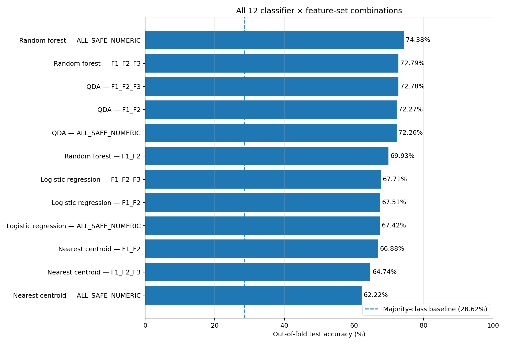
| rank | model | feature_set | n_features | features | accuracy_oof_percent | balanced_accuracy_oof_percent | speaker_macro_balanced_accuracy_percent | macro_f1_oof_percent | fold_accuracy_mean_percent | fold_accuracy_sd_percent |
|---|---|---|---|---|---|---|---|---|---|---|
| 1 | Random forest | ALL_SAFE_NUMERIC | 6 | F1, F2, F3, B1_Hz, B2_Hz, B3_Hz | 74.3847 | 65.5480 | 64.2989 | 66.6377 | 74.3691 | 2.0624 |
| 2 | Random forest | F1_F2_F3 | 3 | F1, F2, F3 | 72.7887 | 63.9407 | 63.0791 | 64.7887 | 72.7690 | 2.1486 |
| 3 | QDA | F1_F2_F3 | 3 | F1, F2, F3 | 72.7815 | 60.5231 | 59.6937 | 60.0331 | 72.7669 | 2.1447 |
| 4 | QDA | F1_F2 | 2 | F1, F2 | 72.2663 | 60.1076 | 59.3045 | 59.5908 | 72.2312 | 2.1432 |
| 5 | QDA | ALL_SAFE_NUMERIC | 6 | F1, F2, F3, B1_Hz, B2_Hz, B3_Hz | 72.2627 | 61.1844 | 60.0403 | 61.3851 | 72.2560 | 2.7427 |
| 6 | Random forest | F1_F2 | 2 | F1, F2 | 69.9285 | 61.3359 | 60.5133 | 62.0114 | 69.8959 | 2.2827 |
| 7 | Logistic regression | F1_F2_F3 | 3 | F1, F2, F3 | 67.7112 | 68.4782 | 68.3293 | 63.8025 | 67.6689 | 5.4922 |
| 8 | Logistic regression | F1_F2 | 2 | F1, F2 | 67.5092 | 68.2423 | 68.2299 | 63.6113 | 67.4407 | 6.1518 |
| 9 | Logistic regression | ALL_SAFE_NUMERIC | 6 | F1, F2, F3, B1_Hz, B2_Hz, B3_Hz | 67.4161 | 68.1987 | 67.9340 | 63.5768 | 67.3606 | 5.2828 |
| 10 | Nearest centroid | F1_F2 | 2 | F1, F2 | 66.8836 | 68.1062 | 68.1142 | 63.1580 | 66.8114 | 6.5576 |
| 11 | Nearest centroid | F1_F2_F3 | 3 | F1, F2, F3 | 64.7392 | 65.8630 | 65.8148 | 61.1053 | 64.6471 | 6.9743 |
| 12 | Nearest centroid | ALL_SAFE_NUMERIC | 6 | F1, F2, F3, B1_Hz, B2_Hz, B3_Hz | 62.2232 | 62.9922 | 62.5833 | 58.5943 | 62.1283 | 6.6774 |
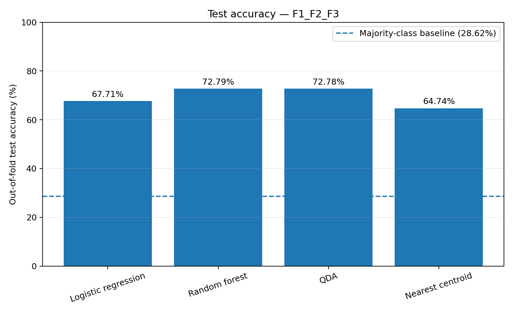
| rank | model | feature_set | n_features | features | accuracy_oof_percent | balanced_accuracy_oof_percent | speaker_macro_balanced_accuracy_percent | macro_f1_oof_percent | fold_accuracy_mean_percent | fold_accuracy_sd_percent |
|---|---|---|---|---|---|---|---|---|---|---|
| 2 | Random forest | F1_F2_F3 | 3 | F1, F2, F3 | 72.7887 | 63.9407 | 63.0791 | 64.7887 | 72.7690 | 2.1486 |
| 3 | QDA | F1_F2_F3 | 3 | F1, F2, F3 | 72.7815 | 60.5231 | 59.6937 | 60.0331 | 72.7669 | 2.1447 |
| 7 | Logistic regression | F1_F2_F3 | 3 | F1, F2, F3 | 67.7112 | 68.4782 | 68.3293 | 63.8025 | 67.6689 | 5.4922 |
| 11 | Nearest centroid | F1_F2_F3 | 3 | F1, F2, F3 | 64.7392 | 65.8630 | 65.8148 | 61.1053 | 64.6471 | 6.9743 |
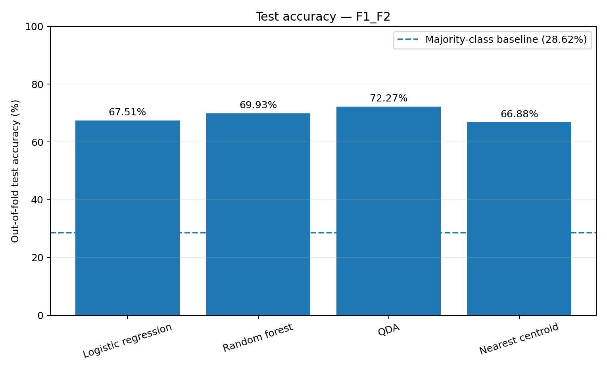
| rank | model | feature_set | n_features | features | accuracy_oof_percent | balanced_accuracy_oof_percent | speaker_macro_balanced_accuracy_percent | macro_f1_oof_percent | fold_accuracy_mean_percent | fold_accuracy_sd_percent |
|---|---|---|---|---|---|---|---|---|---|---|
| 4 | QDA | F1_F2 | 2 | F1, F2 | 72.2663 | 60.1076 | 59.3045 | 59.5908 | 72.2312 | 2.1432 |
| 6 | Random forest | F1_F2 | 2 | F1, F2 | 69.9285 | 61.3359 | 60.5133 | 62.0114 | 69.8959 | 2.2827 |
| 8 | Logistic regression | F1_F2 | 2 | F1, F2 | 67.5092 | 68.2423 | 68.2299 | 63.6113 | 67.4407 | 6.1518 |
| 10 | Nearest centroid | F1_F2 | 2 | F1, F2 | 66.8836 | 68.1062 | 68.1142 | 63.1580 | 66.8114 | 6.5576 |
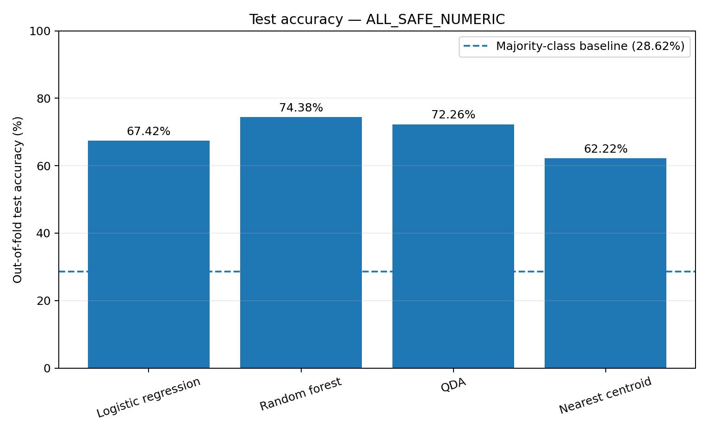
| rank | model | feature_set | n_features | features | accuracy_oof_percent | balanced_accuracy_oof_percent | speaker_macro_balanced_accuracy_percent | macro_f1_oof_percent | fold_accuracy_mean_percent | fold_accuracy_sd_percent |
|---|---|---|---|---|---|---|---|---|---|---|
| 1 | Random forest | ALL_SAFE_NUMERIC | 6 | F1, F2, F3, B1_Hz, B2_Hz, B3_Hz | 74.3847 | 65.5480 | 64.2989 | 66.6377 | 74.3691 | 2.0624 |
| 5 | QDA | ALL_SAFE_NUMERIC | 6 | F1, F2, F3, B1_Hz, B2_Hz, B3_Hz | 72.2627 | 61.1844 | 60.0403 | 61.3851 | 72.2560 | 2.7427 |
| 9 | Logistic regression | ALL_SAFE_NUMERIC | 6 | F1, F2, F3, B1_Hz, B2_Hz, B3_Hz | 67.4161 | 68.1987 | 67.9340 | 63.5768 | 67.3606 | 5.2828 |
| 12 | Nearest centroid | ALL_SAFE_NUMERIC | 6 | F1, F2, F3, B1_Hz, B2_Hz, B3_Hz | 62.2232 | 62.9922 | 62.5833 | 58.5943 | 62.1283 | 6.6774 |
Precision, recall and F1 were calculated from the combined out-of-fold predictions of each configuration.
| config_id | model | feature_set | vowel | precision | recall | f1 | support |
|---|---|---|---|---|---|---|---|
| Logistic regression__F1_F2_F3 | Logistic regression | F1_F2_F3 | a | 0.7818 | 0.7447 | 0.7628 | 39669.0000 |
| Logistic regression__F1_F2_F3 | Logistic regression | F1_F2_F3 | e | 0.7312 | 0.6821 | 0.7058 | 36659.0000 |
| Logistic regression__F1_F2_F3 | Logistic regression | F1_F2_F3 | i | 0.6940 | 0.7995 | 0.7430 | 22341.0000 |
| Logistic regression__F1_F2_F3 | Logistic regression | F1_F2_F3 | o | 0.7102 | 0.5056 | 0.5907 | 33219.0000 |
| Logistic regression__F1_F2_F3 | Logistic regression | F1_F2_F3 | u | 0.2694 | 0.6920 | 0.3878 | 6705.0000 |
| Random forest__F1_F2_F3 | Random forest | F1_F2_F3 | a | 0.7666 | 0.7762 | 0.7714 | 39669.0000 |
| Random forest__F1_F2_F3 | Random forest | F1_F2_F3 | e | 0.7091 | 0.7465 | 0.7273 | 36659.0000 |
| Random forest__F1_F2_F3 | Random forest | F1_F2_F3 | i | 0.7580 | 0.7069 | 0.7315 | 22341.0000 |
| Random forest__F1_F2_F3 | Random forest | F1_F2_F3 | o | 0.7141 | 0.7710 | 0.7415 | 33219.0000 |
| Random forest__F1_F2_F3 | Random forest | F1_F2_F3 | u | 0.4202 | 0.1964 | 0.2677 | 6705.0000 |
| QDA__F1_F2_F3 | QDA | F1_F2_F3 | a | 0.7780 | 0.7586 | 0.7682 | 39669.0000 |
| QDA__F1_F2_F3 | QDA | F1_F2_F3 | e | 0.6806 | 0.8064 | 0.7382 | 36659.0000 |
| QDA__F1_F2_F3 | QDA | F1_F2_F3 | i | 0.8016 | 0.6215 | 0.7002 | 22341.0000 |
| QDA__F1_F2_F3 | QDA | F1_F2_F3 | o | 0.7002 | 0.8184 | 0.7547 | 33219.0000 |
| QDA__F1_F2_F3 | QDA | F1_F2_F3 | u | 0.4290 | 0.0212 | 0.0404 | 6705.0000 |
| Nearest centroid__F1_F2_F3 | Nearest centroid | F1_F2_F3 | a | 0.7697 | 0.7274 | 0.7479 | 39669.0000 |
| Nearest centroid__F1_F2_F3 | Nearest centroid | F1_F2_F3 | e | 0.6951 | 0.6362 | 0.6643 | 36659.0000 |
| Nearest centroid__F1_F2_F3 | Nearest centroid | F1_F2_F3 | i | 0.6620 | 0.7432 | 0.7002 | 22341.0000 |
| Nearest centroid__F1_F2_F3 | Nearest centroid | F1_F2_F3 | o | 0.6627 | 0.4900 | 0.5634 | 33219.0000 |
| Nearest centroid__F1_F2_F3 | Nearest centroid | F1_F2_F3 | u | 0.2607 | 0.6965 | 0.3794 | 6705.0000 |
| Logistic regression__F1_F2 | Logistic regression | F1_F2 | a | 0.7811 | 0.7386 | 0.7592 | 39669.0000 |
| Logistic regression__F1_F2 | Logistic regression | F1_F2 | e | 0.7277 | 0.6829 | 0.7046 | 36659.0000 |
| Logistic regression__F1_F2 | Logistic regression | F1_F2 | i | 0.6907 | 0.7910 | 0.7374 | 22341.0000 |
| Logistic regression__F1_F2 | Logistic regression | F1_F2 | o | 0.7121 | 0.5097 | 0.5942 | 33219.0000 |
| Logistic regression__F1_F2 | Logistic regression | F1_F2 | u | 0.2672 | 0.6899 | 0.3852 | 6705.0000 |
| Random forest__F1_F2 | Random forest | F1_F2 | a | 0.7373 | 0.7454 | 0.7413 | 39669.0000 |
| Random forest__F1_F2 | Random forest | F1_F2 | e | 0.6883 | 0.7271 | 0.7072 | 36659.0000 |
| Random forest__F1_F2 | Random forest | F1_F2 | i | 0.7311 | 0.6764 | 0.7027 | 22341.0000 |
| Random forest__F1_F2 | Random forest | F1_F2 | o | 0.6858 | 0.7327 | 0.7085 | 33219.0000 |
| Random forest__F1_F2 | Random forest | F1_F2 | u | 0.3445 | 0.1852 | 0.2409 | 6705.0000 |
| QDA__F1_F2 | QDA | F1_F2 | a | 0.7788 | 0.7384 | 0.7581 | 39669.0000 |
| QDA__F1_F2 | QDA | F1_F2 | e | 0.6775 | 0.8078 | 0.7369 | 36659.0000 |
| QDA__F1_F2 | QDA | F1_F2 | i | 0.8010 | 0.6133 | 0.6947 | 22341.0000 |
| QDA__F1_F2 | QDA | F1_F2 | o | 0.6879 | 0.8251 | 0.7503 | 33219.0000 |
| QDA__F1_F2 | QDA | F1_F2 | u | 0.4413 | 0.0207 | 0.0396 | 6705.0000 |
| Nearest centroid__F1_F2 | Nearest centroid | F1_F2 | a | 0.7722 | 0.7383 | 0.7548 | 39669.0000 |
| Nearest centroid__F1_F2 | Nearest centroid | F1_F2 | e | 0.7338 | 0.6569 | 0.6932 | 36659.0000 |
| Nearest centroid__F1_F2 | Nearest centroid | F1_F2 | i | 0.6833 | 0.8088 | 0.7408 | 22341.0000 |
| Nearest centroid__F1_F2 | Nearest centroid | F1_F2 | o | 0.6911 | 0.4980 | 0.5789 | 33219.0000 |
| Nearest centroid__F1_F2 | Nearest centroid | F1_F2 | u | 0.2700 | 0.7034 | 0.3902 | 6705.0000 |
| Logistic regression__ALL_SAFE_NUMERIC | Logistic regression | ALL_SAFE_NUMERIC | a | 0.7776 | 0.7376 | 0.7571 | 39669.0000 |
| Logistic regression__ALL_SAFE_NUMERIC | Logistic regression | ALL_SAFE_NUMERIC | e | 0.7336 | 0.6772 | 0.7043 | 36659.0000 |
| Logistic regression__ALL_SAFE_NUMERIC | Logistic regression | ALL_SAFE_NUMERIC | i | 0.6930 | 0.8004 | 0.7428 | 22341.0000 |
| Logistic regression__ALL_SAFE_NUMERIC | Logistic regression | ALL_SAFE_NUMERIC | o | 0.6937 | 0.5075 | 0.5861 | 33219.0000 |
| Logistic regression__ALL_SAFE_NUMERIC | Logistic regression | ALL_SAFE_NUMERIC | u | 0.2708 | 0.6872 | 0.3885 | 6705.0000 |
| Random forest__ALL_SAFE_NUMERIC | Random forest | ALL_SAFE_NUMERIC | a | 0.7823 | 0.7952 | 0.7887 | 39669.0000 |
| Random forest__ALL_SAFE_NUMERIC | Random forest | ALL_SAFE_NUMERIC | e | 0.7245 | 0.7581 | 0.7410 | 36659.0000 |
| Random forest__ALL_SAFE_NUMERIC | Random forest | ALL_SAFE_NUMERIC | i | 0.7706 | 0.7166 | 0.7426 | 22341.0000 |
| Random forest__ALL_SAFE_NUMERIC | Random forest | ALL_SAFE_NUMERIC | o | 0.7247 | 0.7917 | 0.7567 | 33219.0000 |
| Random forest__ALL_SAFE_NUMERIC | Random forest | ALL_SAFE_NUMERIC | u | 0.5077 | 0.2158 | 0.3029 | 6705.0000 |
| QDA__ALL_SAFE_NUMERIC | QDA | ALL_SAFE_NUMERIC | a | 0.7690 | 0.7578 | 0.7633 | 39669.0000 |
| QDA__ALL_SAFE_NUMERIC | QDA | ALL_SAFE_NUMERIC | e | 0.6922 | 0.7732 | 0.7304 | 36659.0000 |
| QDA__ALL_SAFE_NUMERIC | QDA | ALL_SAFE_NUMERIC | i | 0.7806 | 0.6489 | 0.7087 | 22341.0000 |
| QDA__ALL_SAFE_NUMERIC | QDA | ALL_SAFE_NUMERIC | o | 0.6970 | 0.8054 | 0.7473 | 33219.0000 |
| QDA__ALL_SAFE_NUMERIC | QDA | ALL_SAFE_NUMERIC | u | 0.3110 | 0.0740 | 0.1195 | 6705.0000 |
| Nearest centroid__ALL_SAFE_NUMERIC | Nearest centroid | ALL_SAFE_NUMERIC | a | 0.7390 | 0.6982 | 0.7180 | 39669.0000 |
| Nearest centroid__ALL_SAFE_NUMERIC | Nearest centroid | ALL_SAFE_NUMERIC | e | 0.6772 | 0.5967 | 0.6344 | 36659.0000 |
| Nearest centroid__ALL_SAFE_NUMERIC | Nearest centroid | ALL_SAFE_NUMERIC | i | 0.6470 | 0.7443 | 0.6923 | 22341.0000 |
| Nearest centroid__ALL_SAFE_NUMERIC | Nearest centroid | ALL_SAFE_NUMERIC | o | 0.6328 | 0.4749 | 0.5426 | 33219.0000 |
| Nearest centroid__ALL_SAFE_NUMERIC | Nearest centroid | ALL_SAFE_NUMERIC | u | 0.2343 | 0.6355 | 0.3424 | 6705.0000 |
The same speaker-disjoint five folds were used for all twelve configurations.
| config_id | model | feature_set | fold | train_tokens | test_tokens | train_speakers | test_speakers | speaker_overlap | accuracy | balanced_accuracy | macro_f1 |
|---|---|---|---|---|---|---|---|---|---|---|---|
| Logistic regression__F1_F2_F3 | Logistic regression | F1_F2_F3 | 1 | 111294 | 27299 | 35 | 8 | 0 | 0.5921 | 0.6484 | 0.5705 |
| Logistic regression__F1_F2_F3 | Logistic regression | F1_F2_F3 | 2 | 110505 | 28088 | 34 | 9 | 0 | 0.6554 | 0.6641 | 0.6153 |
| Logistic regression__F1_F2_F3 | Logistic regression | F1_F2_F3 | 3 | 110505 | 28088 | 34 | 9 | 0 | 0.7077 | 0.6862 | 0.6665 |
| Logistic regression__F1_F2_F3 | Logistic regression | F1_F2_F3 | 4 | 111885 | 26708 | 35 | 8 | 0 | 0.6956 | 0.6974 | 0.6544 |
| Logistic regression__F1_F2_F3 | Logistic regression | F1_F2_F3 | 5 | 110183 | 28410 | 34 | 9 | 0 | 0.7327 | 0.7164 | 0.6851 |
| Random forest__F1_F2_F3 | Random forest | F1_F2_F3 | 1 | 111294 | 27299 | 35 | 8 | 0 | 0.7146 | 0.6707 | 0.6635 |
| Random forest__F1_F2_F3 | Random forest | F1_F2_F3 | 2 | 110505 | 28088 | 34 | 9 | 0 | 0.7209 | 0.6268 | 0.6355 |
| Random forest__F1_F2_F3 | Random forest | F1_F2_F3 | 3 | 110505 | 28088 | 34 | 9 | 0 | 0.7134 | 0.6071 | 0.6173 |
| Random forest__F1_F2_F3 | Random forest | F1_F2_F3 | 4 | 111885 | 26708 | 35 | 8 | 0 | 0.7242 | 0.6292 | 0.6366 |
| Random forest__F1_F2_F3 | Random forest | F1_F2_F3 | 5 | 110183 | 28410 | 34 | 9 | 0 | 0.7653 | 0.6527 | 0.6653 |
| QDA__F1_F2_F3 | QDA | F1_F2_F3 | 1 | 111294 | 27299 | 35 | 8 | 0 | 0.7264 | 0.6296 | 0.6158 |
| QDA__F1_F2_F3 | QDA | F1_F2_F3 | 2 | 110505 | 28088 | 34 | 9 | 0 | 0.7117 | 0.5904 | 0.5863 |
| QDA__F1_F2_F3 | QDA | F1_F2_F3 | 3 | 110505 | 28088 | 34 | 9 | 0 | 0.7135 | 0.5822 | 0.5824 |
| QDA__F1_F2_F3 | QDA | F1_F2_F3 | 4 | 111885 | 26708 | 35 | 8 | 0 | 0.7223 | 0.5983 | 0.5915 |
| QDA__F1_F2_F3 | QDA | F1_F2_F3 | 5 | 110183 | 28410 | 34 | 9 | 0 | 0.7644 | 0.6208 | 0.6153 |
| Nearest centroid__F1_F2_F3 | Nearest centroid | F1_F2_F3 | 1 | 111294 | 27299 | 35 | 8 | 0 | 0.5465 | 0.6119 | 0.5280 |
| Nearest centroid__F1_F2_F3 | Nearest centroid | F1_F2_F3 | 2 | 110505 | 28088 | 34 | 9 | 0 | 0.6326 | 0.6434 | 0.5920 |
| Nearest centroid__F1_F2_F3 | Nearest centroid | F1_F2_F3 | 3 | 110505 | 28088 | 34 | 9 | 0 | 0.6953 | 0.6708 | 0.6541 |
| Nearest centroid__F1_F2_F3 | Nearest centroid | F1_F2_F3 | 4 | 111885 | 26708 | 35 | 8 | 0 | 0.6301 | 0.6451 | 0.5987 |
| Nearest centroid__F1_F2_F3 | Nearest centroid | F1_F2_F3 | 5 | 110183 | 28410 | 34 | 9 | 0 | 0.7278 | 0.7075 | 0.6807 |
| Logistic regression__F1_F2 | Logistic regression | F1_F2 | 1 | 111294 | 27299 | 35 | 8 | 0 | 0.5790 | 0.6381 | 0.5580 |
| Logistic regression__F1_F2 | Logistic regression | F1_F2 | 2 | 110505 | 28088 | 34 | 9 | 0 | 0.6632 | 0.6705 | 0.6208 |
| Logistic regression__F1_F2 | Logistic regression | F1_F2 | 3 | 110505 | 28088 | 34 | 9 | 0 | 0.7144 | 0.6907 | 0.6733 |
| Logistic regression__F1_F2 | Logistic regression | F1_F2 | 4 | 111885 | 26708 | 35 | 8 | 0 | 0.6755 | 0.6813 | 0.6366 |
| Logistic regression__F1_F2 | Logistic regression | F1_F2 | 5 | 110183 | 28410 | 34 | 9 | 0 | 0.7400 | 0.7186 | 0.6920 |
| Random forest__F1_F2 | Random forest | F1_F2 | 1 | 111294 | 27299 | 35 | 8 | 0 | 0.6725 | 0.6295 | 0.6192 |
| Random forest__F1_F2 | Random forest | F1_F2 | 2 | 110505 | 28088 | 34 | 9 | 0 | 0.6995 | 0.6084 | 0.6134 |
| Random forest__F1_F2 | Random forest | F1_F2 | 3 | 110505 | 28088 | 34 | 9 | 0 | 0.6981 | 0.5933 | 0.6060 |
| Random forest__F1_F2 | Random forest | F1_F2 | 4 | 111885 | 26708 | 35 | 8 | 0 | 0.6898 | 0.6042 | 0.6115 |
| Random forest__F1_F2 | Random forest | F1_F2 | 5 | 110183 | 28410 | 34 | 9 | 0 | 0.7350 | 0.6216 | 0.6325 |
| QDA__F1_F2 | QDA | F1_F2 | 1 | 111294 | 27299 | 35 | 8 | 0 | 0.7126 | 0.6212 | 0.6069 |
| QDA__F1_F2 | QDA | F1_F2 | 2 | 110505 | 28088 | 34 | 9 | 0 | 0.7229 | 0.5986 | 0.5947 |
| QDA__F1_F2 | QDA | F1_F2 | 3 | 110505 | 28088 | 34 | 9 | 0 | 0.7173 | 0.5838 | 0.5834 |
| QDA__F1_F2 | QDA | F1_F2 | 4 | 111885 | 26708 | 35 | 8 | 0 | 0.7010 | 0.5804 | 0.5708 |
| QDA__F1_F2 | QDA | F1_F2 | 5 | 110183 | 28410 | 34 | 9 | 0 | 0.7578 | 0.6148 | 0.6090 |
| Nearest centroid__F1_F2 | Nearest centroid | F1_F2 | 1 | 111294 | 27299 | 35 | 8 | 0 | 0.5674 | 0.6297 | 0.5468 |
| Nearest centroid__F1_F2 | Nearest centroid | F1_F2 | 2 | 110505 | 28088 | 34 | 9 | 0 | 0.6554 | 0.6661 | 0.6137 |
| Nearest centroid__F1_F2 | Nearest centroid | F1_F2 | 3 | 110505 | 28088 | 34 | 9 | 0 | 0.7042 | 0.6865 | 0.6659 |
| Nearest centroid__F1_F2 | Nearest centroid | F1_F2 | 4 | 111885 | 26708 | 35 | 8 | 0 | 0.6706 | 0.6838 | 0.6355 |
| Nearest centroid__F1_F2 | Nearest centroid | F1_F2 | 5 | 110183 | 28410 | 34 | 9 | 0 | 0.7429 | 0.7263 | 0.6959 |
| Logistic regression__ALL_SAFE_NUMERIC | Logistic regression | ALL_SAFE_NUMERIC | 1 | 111294 | 27299 | 35 | 8 | 0 | 0.5934 | 0.6506 | 0.5724 |
| Logistic regression__ALL_SAFE_NUMERIC | Logistic regression | ALL_SAFE_NUMERIC | 2 | 110505 | 28088 | 34 | 9 | 0 | 0.6594 | 0.6663 | 0.6195 |
| Logistic regression__ALL_SAFE_NUMERIC | Logistic regression | ALL_SAFE_NUMERIC | 3 | 110505 | 28088 | 34 | 9 | 0 | 0.7042 | 0.6747 | 0.6628 |
| Logistic regression__ALL_SAFE_NUMERIC | Logistic regression | ALL_SAFE_NUMERIC | 4 | 111885 | 26708 | 35 | 8 | 0 | 0.6777 | 0.6903 | 0.6388 |
| Logistic regression__ALL_SAFE_NUMERIC | Logistic regression | ALL_SAFE_NUMERIC | 5 | 110183 | 28410 | 34 | 9 | 0 | 0.7334 | 0.7143 | 0.6857 |
| Random forest__ALL_SAFE_NUMERIC | Random forest | ALL_SAFE_NUMERIC | 1 | 111294 | 27299 | 35 | 8 | 0 | 0.7322 | 0.6930 | 0.6860 |
| Random forest__ALL_SAFE_NUMERIC | Random forest | ALL_SAFE_NUMERIC | 2 | 110505 | 28088 | 34 | 9 | 0 | 0.7371 | 0.6477 | 0.6597 |
| Random forest__ALL_SAFE_NUMERIC | Random forest | ALL_SAFE_NUMERIC | 3 | 110505 | 28088 | 34 | 9 | 0 | 0.7272 | 0.6196 | 0.6310 |
| Random forest__ALL_SAFE_NUMERIC | Random forest | ALL_SAFE_NUMERIC | 4 | 111885 | 26708 | 35 | 8 | 0 | 0.7428 | 0.6478 | 0.6598 |
| Random forest__ALL_SAFE_NUMERIC | Random forest | ALL_SAFE_NUMERIC | 5 | 110183 | 28410 | 34 | 9 | 0 | 0.7791 | 0.6582 | 0.6688 |
| QDA__ALL_SAFE_NUMERIC | QDA | ALL_SAFE_NUMERIC | 1 | 111294 | 27299 | 35 | 8 | 0 | 0.7206 | 0.6399 | 0.6335 |
| QDA__ALL_SAFE_NUMERIC | QDA | ALL_SAFE_NUMERIC | 2 | 110505 | 28088 | 34 | 9 | 0 | 0.7045 | 0.5970 | 0.5980 |
| QDA__ALL_SAFE_NUMERIC | QDA | ALL_SAFE_NUMERIC | 3 | 110505 | 28088 | 34 | 9 | 0 | 0.6946 | 0.5683 | 0.5730 |
| QDA__ALL_SAFE_NUMERIC | QDA | ALL_SAFE_NUMERIC | 4 | 111885 | 26708 | 35 | 8 | 0 | 0.7270 | 0.6165 | 0.6199 |
| QDA__ALL_SAFE_NUMERIC | QDA | ALL_SAFE_NUMERIC | 5 | 110183 | 28410 | 34 | 9 | 0 | 0.7659 | 0.6312 | 0.6311 |
| Nearest centroid__ALL_SAFE_NUMERIC | Nearest centroid | ALL_SAFE_NUMERIC | 1 | 111294 | 27299 | 35 | 8 | 0 | 0.5353 | 0.6006 | 0.5181 |
| Nearest centroid__ALL_SAFE_NUMERIC | Nearest centroid | ALL_SAFE_NUMERIC | 2 | 110505 | 28088 | 34 | 9 | 0 | 0.6027 | 0.6073 | 0.5639 |
| Nearest centroid__ALL_SAFE_NUMERIC | Nearest centroid | ALL_SAFE_NUMERIC | 3 | 110505 | 28088 | 34 | 9 | 0 | 0.6650 | 0.6169 | 0.6124 |
| Nearest centroid__ALL_SAFE_NUMERIC | Nearest centroid | ALL_SAFE_NUMERIC | 4 | 111885 | 26708 | 35 | 8 | 0 | 0.5954 | 0.6216 | 0.5662 |
| Nearest centroid__ALL_SAFE_NUMERIC | Nearest centroid | ALL_SAFE_NUMERIC | 5 | 110183 | 28410 | 34 | 9 | 0 | 0.7080 | 0.6850 | 0.6582 |
| speaker | test_fold |
|---|---|
| 0f786745-Audio_SP20 | 1 |
| 2988c6fc-Audio_SP13 | 1 |
| 2e25304d-Audio_SP12 | 1 |
| 42d56bbf-Audio_SP23 | 1 |
| 713a2f9b-Audio_SP16 | 1 |
| 9a0c18cb-Audio_SP14 | 1 |
| a1a056ce-Audio_SP11 | 1 |
| d4c363bf-Audio_SP13 | 1 |
| 0af9ac47-Audio_SP14 | 2 |
| 34ad326e-Audio_SP7 | 2 |
| 375a28cd-Audio_SP16 | 2 |
| 51a17262-Audio_SP18 | 2 |
| 5a932187-audio_SP16 | 2 |
| 63239054-Audio_SP15 | 2 |
| 85c7895f-Audio_SP16 | 2 |
| 919b9bc1-Audio_SP14 | 2 |
| e90f8e4d-Audio_SP22 | 2 |
| 12c532f8-Audio_SP15 | 3 |
| 5278b5b9-Audio_SP15 | 3 |
| 5819ce7a-Audio_SP11 | 3 |
| 7c3c98d2-Audio_SP13 | 3 |
| 7dec1dd7-Audio_SP13 | 3 |
| c3533b36-Audio_SP16 | 3 |
| cafd9c21-Audio_SP27 | 3 |
| dbeec025-Audio_SP13 | 3 |
| f061152e-Audio_SP12 | 3 |
| 0e6115f2-Audio_SP19 | 4 |
| 30a90cb2-Audio_SP21 | 4 |
| 3361ee02-Audio_SP10 | 4 |
| 501e6487-Audio_SP19 | 4 |
| 514fc6b6-Audio_SP19 | 4 |
| 7a414497-Audio_SP15 | 4 |
| adad0062-Audio_SP17 | 4 |
| fcd45f4d-Audio_SP21 | 4 |
| 061ea7d0-Audio_SP16 | 5 |
| 181d5ce9-Audio_SP21 | 5 |
| 1c403477-Audio_SP13 | 5 |
| 1d46eb6e-Audio_SP18 | 5 |
| 49ae7020-Audio_SP17 | 5 |
| 5586979c-Audio_SP18 | 5 |
| 7aee4437-Audio_SP12 | 5 |
| 7e277fda-Audio_SP28 | 5 |
| a452055c-Audio_SP11 | 5 |
Rows correspond to true vowels and columns correspond to predicted vowels. Each row is normalized to 100%.
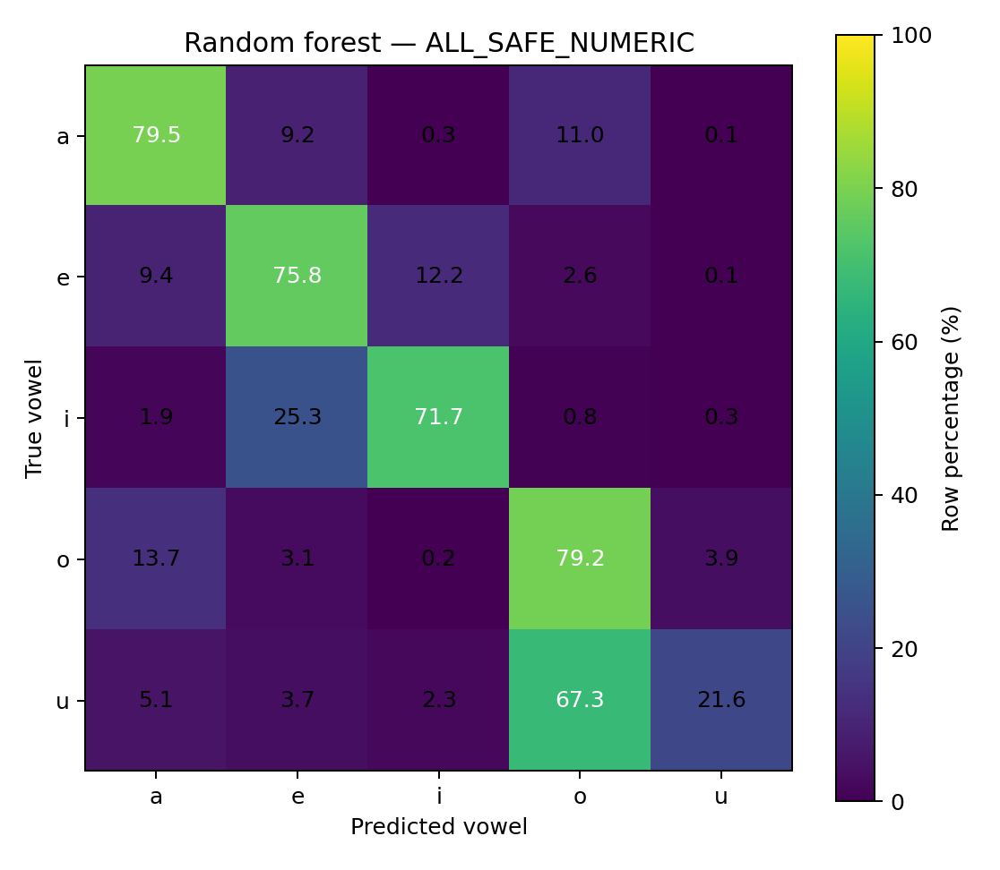
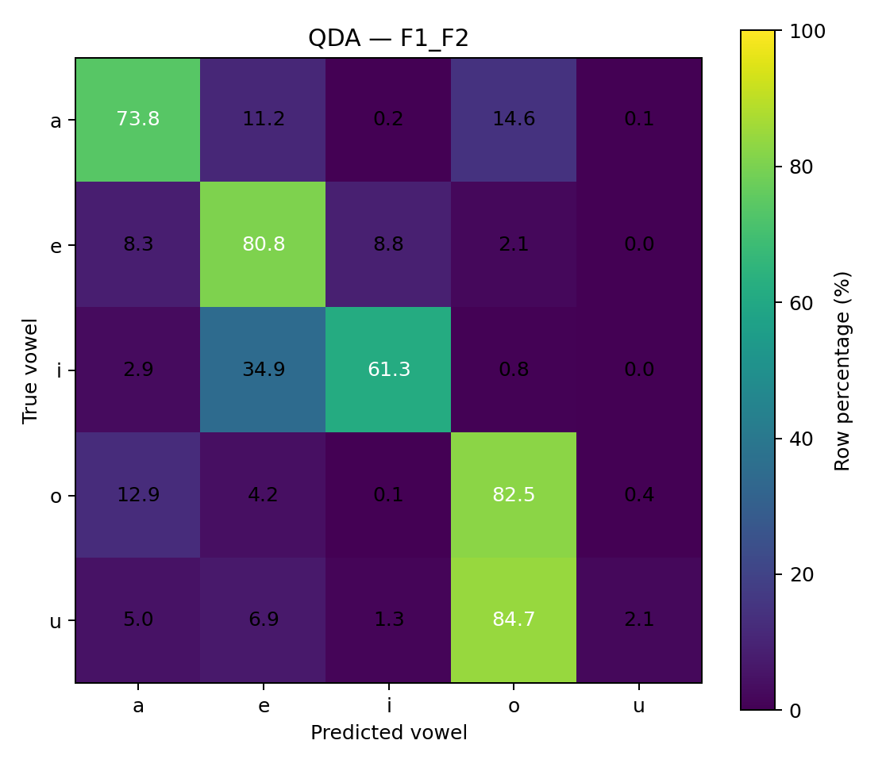
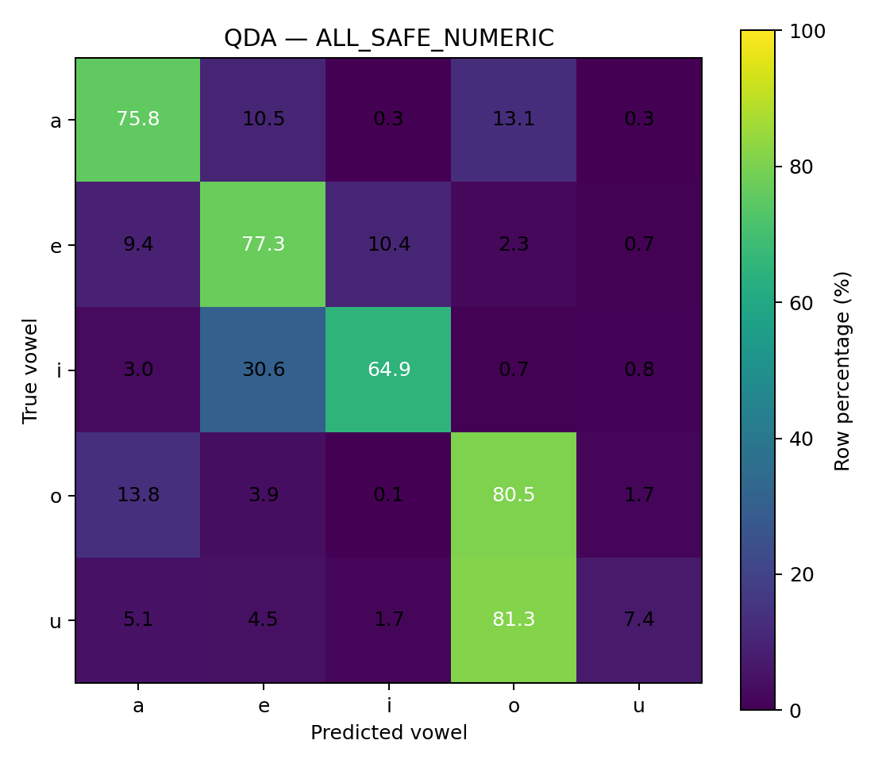
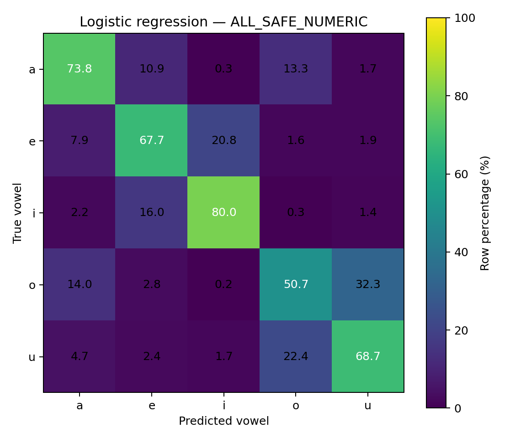
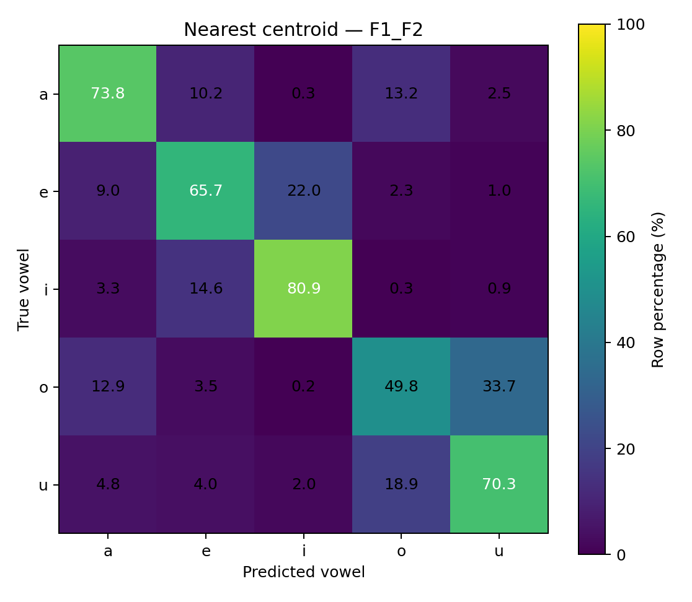
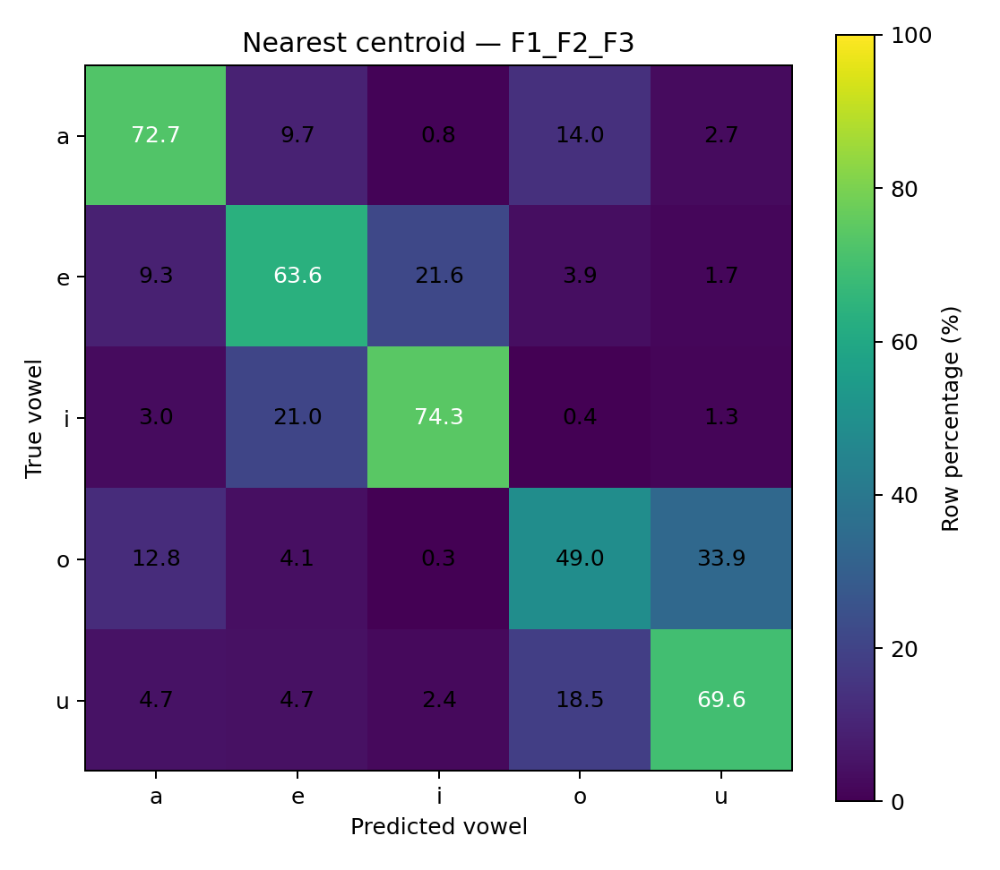
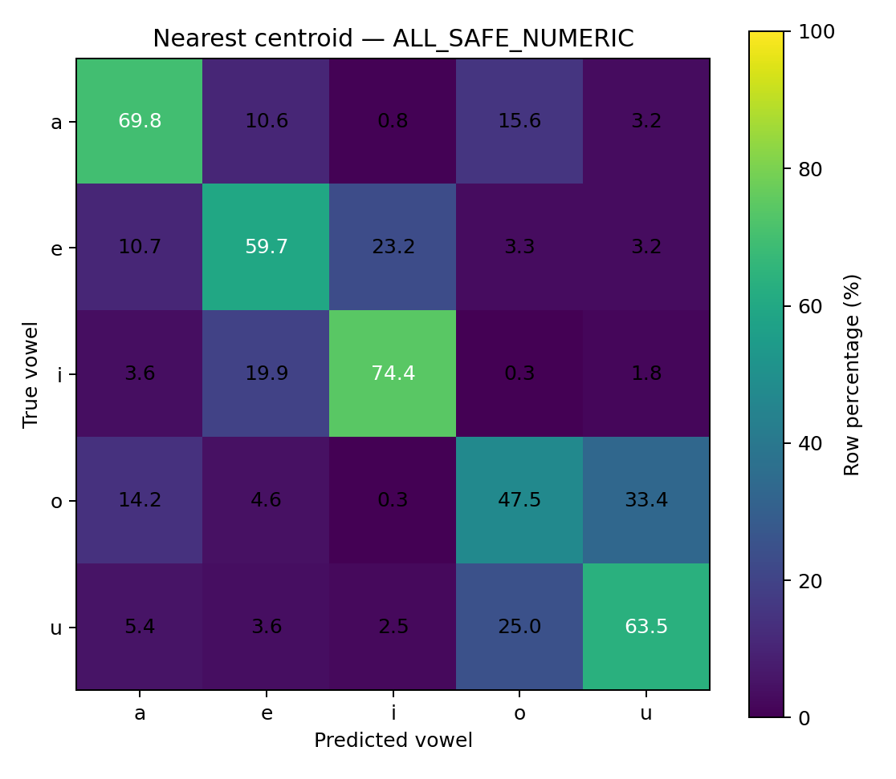
model_summary_12way.csvfold_results_12way.csvper_vowel_results_12way.csvconfusion_matrices_12way.csvspeaker_fold_assignment.csv